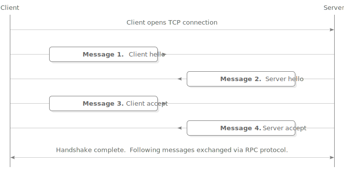
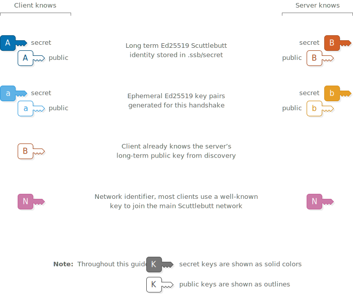

Scuttlebutt Protocol Guide
How Scuttlebutt peers find and talk to each other
How Scuttlebutt peers find and talk to each other
Once a Scuttlebutt client has discovered the IP address and port number of a peer they connect via TCP to exchange messages. The connection begins with a 4-step handshake to authenticate each peer and set up an encrypted channel.
The handshake uses the Secret Handshake key exchange which is designed to have these security properties:
Upon starting the handshake, the client and server know these keys:
First the client sends their generated ephemeral key. Also included is an hmac that indicates the client wishes to use their key with this specific instance of the Scuttlebutt network.
The network identifier is a fixed 32-byte key. Changing the key allows separate networks to be created, for example private networks or testnets. An eavesdropper cannot extract the network identifier directly from what is sent over the wire, although they could confirm a guess that it is the main Scuttlebutt network because that identifier is publicly known.
The server stores the client’s ephemeral public key and uses the hmac to verify that the client is using the same network identifier.
The server responds with their own ephemeral public key and hmac. The client stores the key and verifies that they are also using the same network identifier.
Now that ephemeral keys have been sent, both ends use them to derive a shared secret using scalar multiplication.
The client and server each combine their own ephemeral secret key with the other’s ephemeral public key to produce the same shared secret on both ends. An eavesdropper doesn’t know either secret key so they can’t generate the shared secret. A man-in-the-middle could swap out the ephemeral keys in messages 1 and 2 for their own keys, so the shared secret alone is not enough for the client and server to know that they are talking to each other and not a man-in-the-middle.
Because the client already knows the server’s long term public key, both ends derive a second secret that will allow the client to send a message that only the real server can read and not a man-in-the-middle.
The client reveals their identity to the server by sending their long term public key. The client proves their identity and binds it to this handshake by using their long term secret key to sign the keys that were used earlier in the handshake.
The client’s message is enclosed in a secret box to ensure that only the server can read it. Upon receiving it, the server opens the box, stores the client’s long term public key and verifies the signature.
An all-zero nonce is used for the secret box. The secret box construction requires that all secret boxes using a particular key must use different nonces. Using a zero nonce is allowed here because this is the only secret box that ever uses the key sha256(concat( , , )).
Now that the server knows the client’s long term public key, another shared secret is derived by both ends. The server uses this shared secret to send a message that only the real client can read and not a man-in-the-middle.
The server accepts the handshake by signing a message using their long term secret key. It includes a copy of the client’s previous signature. The server’s signature is enclosed in a secret box using all of the shared secrets.
Upon receiving it, the client opens the box and verifies the server’s signature.
Similarly to the previous message, this secret box also uses an all-zero nonce because it is the only secret box that ever uses the key sha256(concat( , , , )). (Note to self: check what box-stream uses.)
At this point the handshake has succeeded. The client and server have proven their identities to each other.
The shared secrets are combined and used in a bulk encryption cipher to provide a secure two-way channel for exchanging further messages.